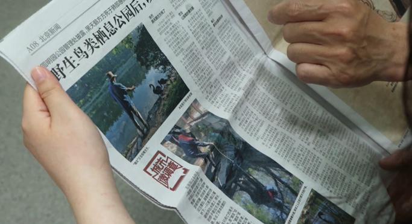
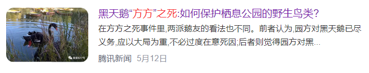

相
关
政
策
保护法&措施
LAWS & METHODS
1、河湖湿地修复计划
（1）湿地的自然意义和破坏现状
2023年2月2日第27个世界湿地日的主题是“湿地修复”（Wetland
Restoration）。作为“地球之肾”和“生物超市”，湿地具有丰富的陆生和水生动植物资源，能生产大量的食物，几乎支持了全部淡水生物群落和部分盐生生物群落，是物种天然的基因库。同时，湿地也是萎缩、丧失和退化速度最快的生态系统之一，过度开发、填充、污染带来的破坏，以及入侵物种和气候变化等因素导致全球范围内湿地快速流失。
（2）北京的湿地保护修复
2021年10月，北京市7部门联合印发《北京市湿地保护发展规划（2021—2035年）》，《规划》明确了两个阶段性目标：到2025年，全市湿地保护率不低于70%，小微湿地修复数量不少于50个，到2035年，湿地保护率不低于80%，小微湿地修复数量不少于100个。
同时，《规划》提出，要在全市构建“一核三横四纵”的湿地总体布局，“一核”即中心城区湿地群，“三横”指“妫水河”湿地带、沙河”湿地带、”凉水河”湿地带，“四纵”指“潮河-泃河”“温榆河-北运河”“清水河-永定河”“大石河-拒马河”四大湿地带，旨在通过改善湿地景观，增加市民亲水、体验自然的休闲空间和场所，提升首都城市的宜居水平，增强市民的绿色获得感和幸福感。
（3）北京河湖湿地保护成果
A. 河湖湿地留住鸟儿越冬
农历癸卯兔年，温榆河公园聚集了大大小小的鸟儿一起越冬过年。据温榆河公园生态监测专家吴岚介绍，今年今年来温榆河越冬的鸟类数量和种类十分喜人，国家二级保护动物鸳鸯最多一次性监测到了84只。此外，还有斑头秋沙鸭、普通秋沙鸭、赤麻鸭、绿头鸭、大麻鳽、苍鹭等多种水鸟，这些野生动物都需要自然的湿地岸带提供庇护所。
除了给鸟儿们提供一席歇脚之地，优越的湿地环境还创造了让它们留下来的条件。吴岚还介绍道，去年11月在温榆河流域发现的5只疣鼻天鹅幼鸟，因为食源丰富、生境适宜，天鹅宝宝们在温榆河常住了下来，安营扎寨，休养生息，以待羽翼丰满。与此同时，近期的温榆河鸟调监测还发现了北京罕见鸟——苍头燕雀，一种主要分布在欧洲的鸟类。
温榆河公园位于两河交汇处，多水汇潴，水量丰沛，规划设置构建“一心、三核、四脉”的自然带生态结构，探索荒野式管理模式，以保护生物多样性、人与自然和谐共生。公园规划总水面面积350公顷，其中生态沟渠、湖泊、湿地200公顷。公园规划建设过程中，本着“用生态手段解决生态问题”的基本思路，着力修复现状水系，建设多样湿地生境，利用既有沟渠、坑塘等，规划五条净水廊道，串联十处生态湿地，上游来水经滩涂、河道湿地自然净化，规划整体水质可达到IV类，局部优于IV类。
B.湿地净化水质效果显著
作为永定河进入北京的最后一道关卡，官厅水库八号桥湿地囊括了溪流湿地、森林湿地、湖泊湿地、岛屿湿地、鱼鳞湿地、田园湿地和生物塘湿地等形态各异的湿地。经湿地净化后的永定河来水变为潺潺碧波，缓缓进入官厅水库。“水流过湿地后净化效果显著，可达到地表水Ⅲ—Ⅳ类，总氮、氨氮等污染物去除率达到了40-70%。”观测水质变化，鸟儿是最直接的风向标：在北京官厅水库八号桥湿地，有上千只灰鹤选择在这儿的浅滩处结伴越冬。
据官厅水库管理处永定河库岸管理所所长孙谦介绍，2019年八号桥湿地建成运行后，官厅水库的水生态环境明显好转，加上此前建成的黑土洼湿地和去年投入使用的妫水河湿地，官厅水库的入库水质持续改善。
官厅水库管理处水生态监测分中心主任王秋生介绍，近年来官厅水库库区鸟类数量不断增加，种类愈加丰富，天鹅、灰鹤等大批水鸟飞临驻足，除此之外还监测到彩鹬、半蹼鹬等北京地区记录较少的鸟类，大美湿地正在成为鸟儿的生态乐园。
2、野生动物保护法
（1）鼓励促进形成自发的鸟类保护组织：“鹅友会”，黑天鹅的守望者
A.自发爱好组织：尊重野生鸟类的自然习性
“追鹅，观察鹅，保护鹅。”这是北京“鹅友会”成员祖先生对自己以及其他鹅友会成员目前所做工作的概述。“鹅友会”是由众多喜爱观察北京圆明园内黑天鹅的居民自发形成的组织，主要通过微信群聊来交流自己对于圆明园内黑天鹅的观察结果，适当地为黑天鹅的生存条件做出一些力所能及的改善。
而对于他们来说，这个由爱好者自发形成的组织，最重要的原则就是要坚守：尊重黑天鹅作为一种野生鸟类的生活习性，不可以在违反自然条件的情况下对天鹅的生活做出过分干扰。由此出发，祖先生提到他们目前为黑天鹅所做最多的事情仍是“观察”，北京圆明园内的黑天鹅数量较多，分布较为广泛，单凭园方照料可能无法在每时每刻顾及到每一只天鹅，而鹅友会的成员们则会在学习黑天鹅的生活习惯后，将观察到的异样报告给园方，委托园方进一步检查。
虽然鹅友会为无盈利无对外宣传的纯爱好性组织，但成员们却对保护黑天鹅的工作充满热枕。祖先生向记者介绍了一名林姓的鹅友会成员，提到她基本上一年365天，只要没有特殊情况。都会去园子里边转一大圈。把园内所有的黑天鹅，全部观察一遍。更有一次，这位鹅友在冬天观察到有一只幼年天鹅被冻结在冰面上无法逃脱，便自己踏入了寒冷刺骨的冰水中抱出了天鹅，将天鹅交给园方的兽医治疗。
合理保护，但不违反野生动物的自然生存规律，让原本只是爱好者的“鹅友”们有了主动学习相关知识的热情，祖先生提到一开始自己想要参与保护黑天鹅时因为缺乏相关知识无从入手，而鹅友们则热心地与他分享了经验，现在他也掌握了其中的规律，并且对于黑天鹅保护有了自己的心得：“我感觉过分投喂来说对黑天鹅这个成长繁殖，并不太好。他毕竟不是那种家养。你得保持他的野性，不然他会失去这个自主觅食的能力。”圆明园内禁止游客向黑天鹅进行投喂，鹅友会的成员也会协助劝阻，而在冬季黑天鹅觅食困难的时候，鹅友会内的成员则会向主动园方捐款购买鹅粮，在园方的协调下对于改善黑天鹅生活进行合理的人工干预。
“我觉得这是一件有意义的事情。”祖先生向我们阐述了他对于鹅友会工作的看法，起初他们中很多人都只是路过圆明园进行晨练，而现今却在这个基础上参与进了对于与人类共存的生灵的保护之中，在这个过程中也有不少满含着原始动物与自然相处方式的故事，感化着鹅友们的心灵。
B.与媒体合作：提供“方方之死”的有关资料
近期，圆明园黑天鹅“方方”的死亡引起了大众对于公园野生鸟类保护的注意，而对于鹅友们来说，这更是一件痛心的事情。
“方方”、“大帅”、“小美”、“阿丽”，祖先生提到，经常关注鹅友群内咨询的人们都会很快记住这些名字，鹅友们根据每一只天鹅的外貌特征为它们取不同的名字，向每一只天鹅都倾注了感情。方方的死因与游客不合理投喂有关，而祖先生指出其实对于生活在圆明园内的黑天鹅们，因为这种人类行为的死亡不止方方一例。

（祖先生展示为媒体提供帮助的相关报道）
被鹅友称为“英雄父亲”、曾经在伴侣失踪后独自连续孵蛋二十天的雄性黑天鹅大帅，也在青壮年的年龄不明缘故地死去。虽然鹅友们怀疑为大帅饮用了受污染的水源，但最终还是难以查明结果。
在方方的事件中，新京报的记者找到了祖先生进行此事件的采访，而祖先生在提供自己所了解的线索后，又向记者介绍了其他鹅友，以便了解事情的全貌。祖先生认为与媒体和大众的交流是必要的，黑天鹅在大众公园的生活现状、以及大众如何不干扰、合理保护野生鸟类的知识，是值得被传播的。

（媒体对于黑天鹅死亡事件报道）
C.不断进步的鹅友会：异中求同的共谋福祉
祖先生表示，目前鹅友会、亦或是说对于野生鸟类的自发保护群体的规模正在不断扩大，单是鹅友群就已经建立了三个五百人为上限的群聊。
在黑天鹅的保护工作中也会经常遇到困难，祖先生回忆起不久前便有一家带着小孩的游客，仍由孩子追逐攻击园内的黑天鹅，并且在鹅友进行劝阻后大声谩骂。除此之外，因为鹅友组织的不断扩张，鹅友间也会不时涌现各种矛盾。
“大家对于黑天鹅习性的认识程度不同，对于现象的反应也会不同。”祖先生表示，鹅友间的矛盾主要集中在“是否对于黑天鹅过度保护”上，他认为这个问题是需要花费较长时间去解决的，但即便如此，他也认为大家的出发点都是为了黑天鹅更好地生活，所以总体来说是积极走向的。
“我们现在不仅仅关心黑天鹅。”祖先生在最后向记者提出，圆明园和颐和园是北京两个较大的、较为人熟知的栖息有大量野生鸟类的大众公园，而鹅友会在关心其中较大基数的黑天鹅之外，也关心着其他鸟类。鹅友们希望成为野生鸟类的守望者，更希望有越来越多的人了解这一切，合理地参与其中。
世
界
之
窗
城与鸟之间
CITIES & BIRDS


未
来
展
望
共建未来
FUTURE & DREAM
1、城市建成区受胁鸟类栖息地保护
由于城市建成区具有以人为导向的社会、经济属性，北京市的3类保护潜力区都极少涉及城市建成区（小于5%），相应的保护政策目前也难以直接惠及该区域的生物多样性，自然保护区和生态保护红线尚未覆盖位于城市建成区内及其外围的公园。尤其是具有悠久历史的皇家园林和近年建设拥有大面积水体的大型城市绿地。2019年，北京市发布了《鸟类多样性及栖息地质量评价技术规程》地方标准，明确要求在城市绿地和乡村生境区域针对受胁鸟类、国家和北京市重点保护鸟类的特定栖息地要求，开展栖息地质量评价、恢复设计和管理。在此基础上，建议进一步细化对建成区大型绿地的分区管理规范，划定生物多样性保育区，保证现有和未来新建的大型城市绿地中能够保有10
ha或以上面积的完整栖息地，包含一定面积的水体、沼泽、滩地和高覆盖草地；降低人为活动干扰；结合绿地养护和提升工程，营造适宜各类生物栖息的生境，特别是水域栖息地。
2、乡村生境区受胁鸟类栖息地保护
农田是一些大型受胁鸟类的重要栖息地。据鸟类分布数据，鹤、大鸨、雁等受胁鸟类在冬季和迁徙季，多利用位于水库附近的农田觅食。大片此类区域在过去3年的时间内，由于库滨带严禁种植业发展和水土保持林地的建设趋于消失。北京目前保有约1，000km²基本农田，占北京市域面积的6.10%。无论是出于粮食安全，还是受胁鸟类保护的考虑，特别建议维持位于大型水面附近基本农田的粮食种植功能。对于目前属于三、四级栖息地的各类林地，应结合未来“平原造林”和建成区外围新建的大型绿地空间，依据相关地方标准，增加适宜受胁鸟类栖息的灌木林、高覆盖度草地，而不是单纯种植乔木。尤其对于平原地区树种单一的大面积人工林，应结合更新抚育工作，增加食源和蜜源树种，以及灌木和草地栖息地。